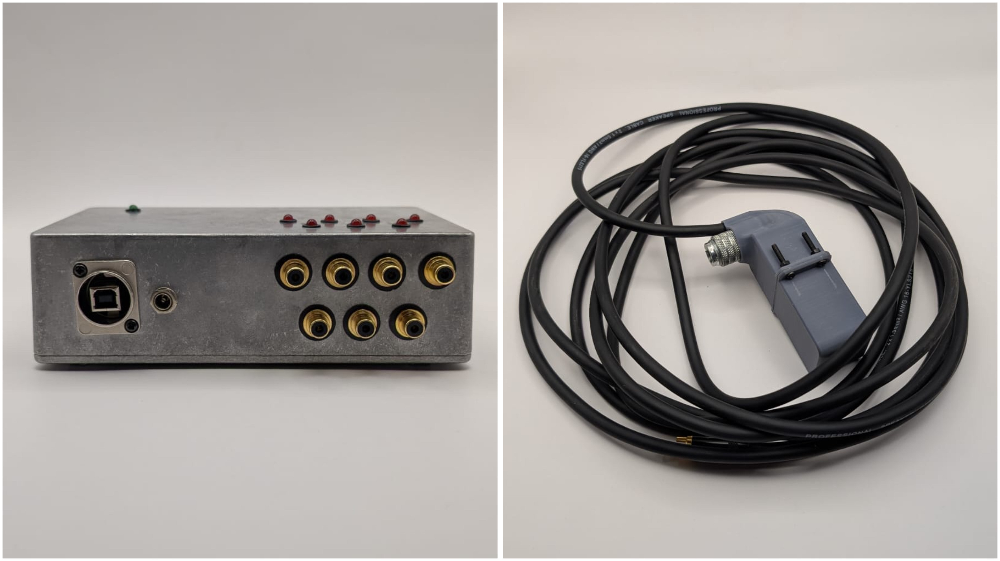

Sobre mí

Hola, me llamo Bernardita. Estudio diseño y de a poco me he ido acercando a las artes mediales, buscando un lugar propio entre la programación, la forma y la materia.
Ahora mismo mi práctica está en el diseño paramétrico: modelo en OpenSCAD cápsulas para módulos eurorack, dentro de un proyecto de tesis doctoral. Me interesa seguir por ese camino y desarrollar piezas que dialoguen con texturas y formas de la naturaleza: cortezas, ramas, lo irregular de un árbol.
Pero si tuviera que elegir lo que más quiero, es la poesía. Escribo desde hace tiempo, y tengo una web donde reúno poemas organizados por estación del año — la puedes ver entre mis proyectos.
El próximo año pienso hacer un magíster en artes. Este portafolio es, por ahora, el registro de ese tránsito.
Software
- OpenSCAD
- Rhinoceros
- Fusion 360
- AutoCAD
- Inventor
- Arduino
- Bambu Studio
- KiCad